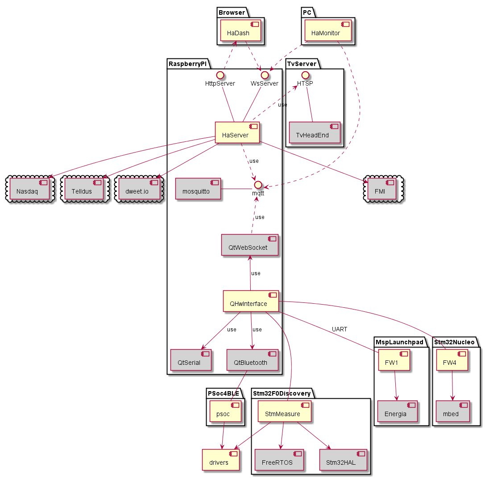
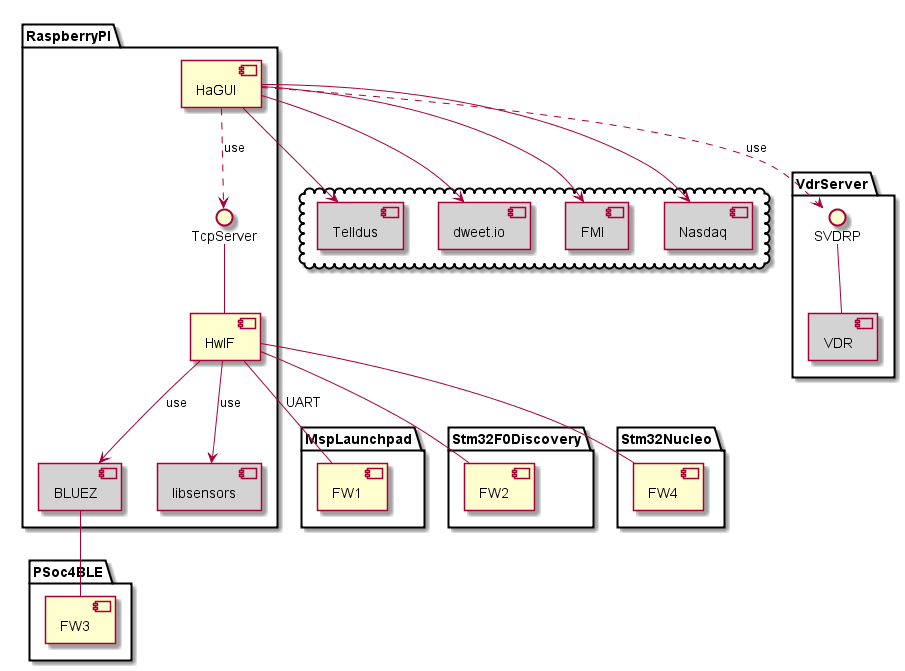
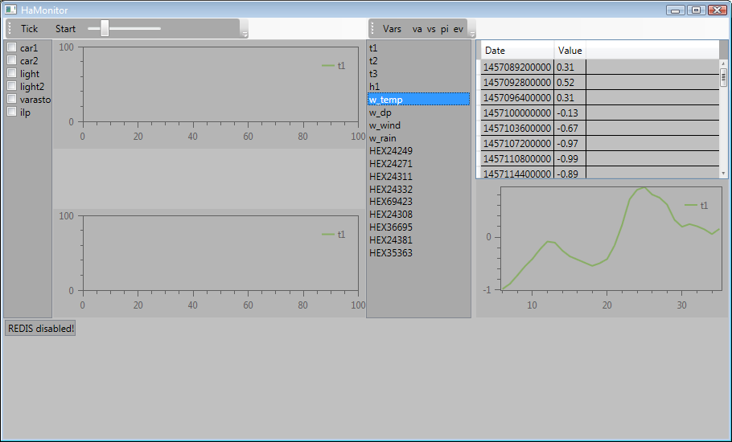
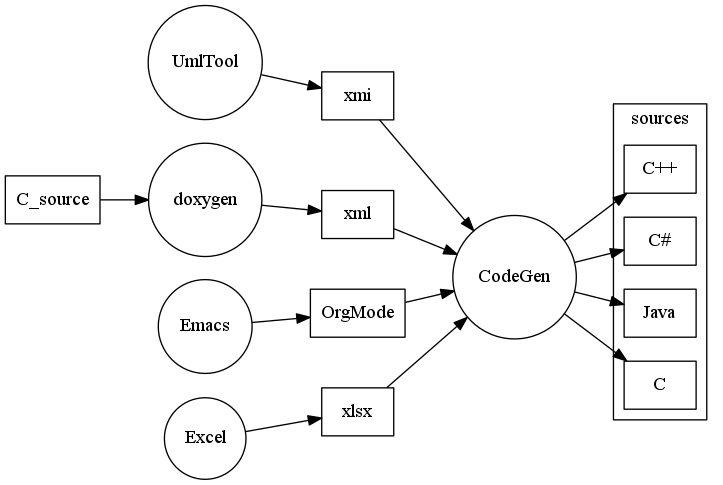
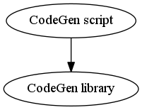

github projects by j-a-r-i
Table of Contents
Overview
Links
See also:
- mbed repositories
- github repositories
- Android applications
- Suse studio
- Ubuntu launchpad (empty)
- NPM (empty)
Home automation system
These projects can be found at github or visual studio online.
New architecture

Old architecture

PC
OS: Windows
HaMonitor
Windows WPF based debugging application for monitoring MQTT messages and REDIS database contents.

Packages:
Raspberry PI
OS: buildroot/Raspbian (used to be custom yocto)
HaDASH frontend (WIP)
HaServer
QHwInterface
Home automation hardware interface application.
Language: Qt (utilize modern C++)
Libraries:
HaGUI frontend (old)
Packages:
- gulp
- q 0.9.2
- angularjs 1.4.9
- google charts
HaGUI backend (old)
HwIF (old)
Home automation hardware interface application.
Language: Modern C++
Libraries:
Possible libraries:
Cypress PSOC 4 BLE
Processor: OS: ???
PSOC
Language: C
CodeGen
- Collect data from several sources:
| Format | File format | Status |
|---|---|---|
| source code | sources -> doxygen -> xml file | - |
| uml model | xmi file | - |
| org-mode | .org | initial |
| excel sheet | xml | - |
- Combine and process the data
- Generate source code for
- C#
- C++
- C
- Java

